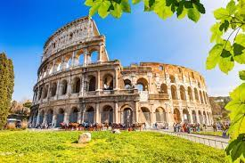

Coliseo Romano
HTML Y CSS
Principal
Coliseo Romano

¿Por qué el Coliseo romano está roto? Resultado de imagen para Coliseo Romano El Coliseo era como un barrio", cuenta Riccardo Santangeli. "Esta vida termina más o menos en el siglo XIV como consecuencia del terremoto que sufrió la ciudad de Roma en 1349, que destruye parte de esas estructuras y golpea también el anfiteatro", añade el profesor de la Universidad de Roma Tres.